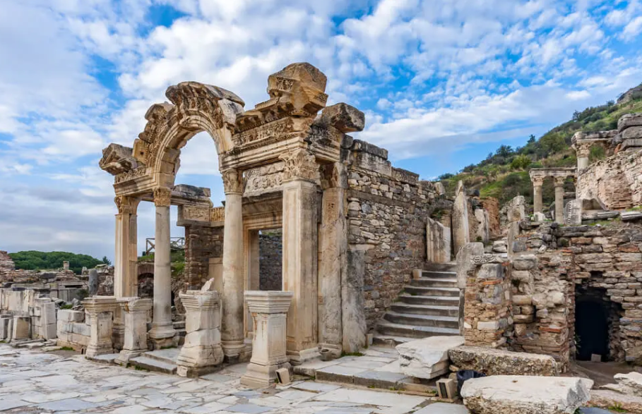
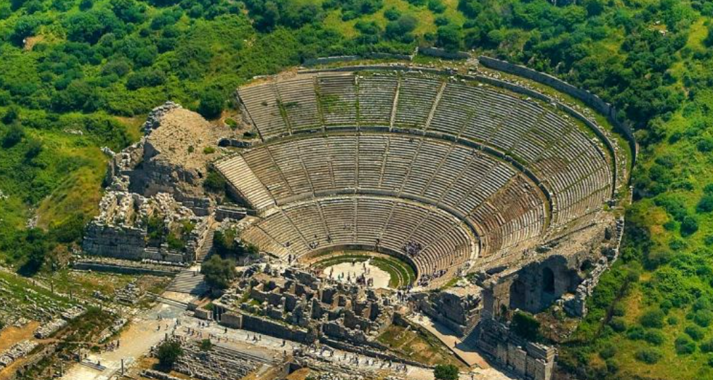
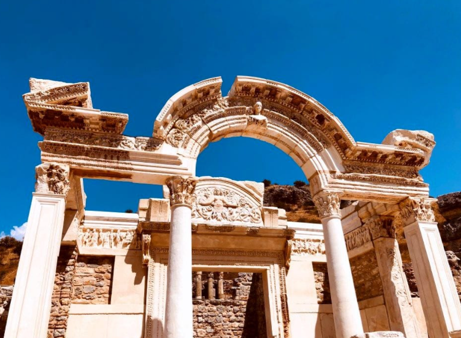
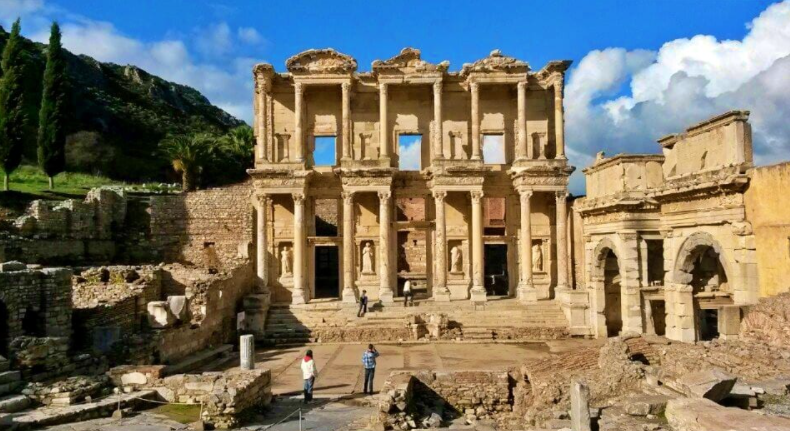
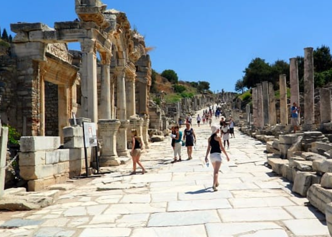
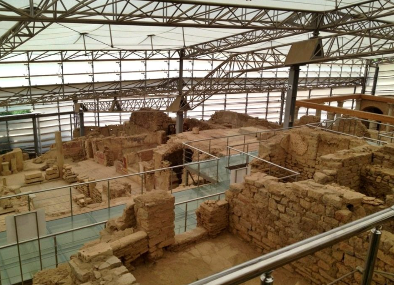
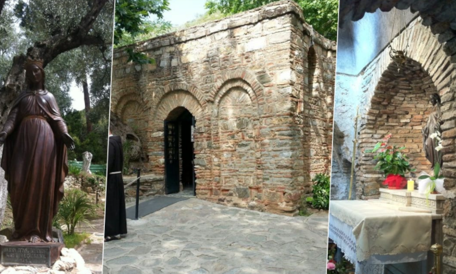

EFES ANTİK KENT
Senede ortalama 1 milyon yerli ve yabancı turistin ziyaret ettiği Efes Harabeleri, ülkemizin UNESCO Dünya Mirası Listesi’nde yer alan önemli bölgelerinden bir tanesi. İzmir ilinin Selçuk ilçesinde yer alan Efes; Antik Kent, Çukuriçi, Meryem Ana Evi gibi önemli bölümlerden oluşuyor. Müzekart ile ücretsiz olarak girebileceğiniz Efes’te, tüm bölümleri aynı anda rahatlıkla gezebilirsiniz. İzmir merkezden 69 km, Kuşadası’nda ise 19 km uzaklıkta yer alan Efes Antik Kenti, ulaşım açısından da oldukça ideal bir konuma sahip. Artemis Tapınağı’ndan Celsus Kütüphanesi’ne dek gezilecek pek çok yeri bünyesinde barındıran Efes Antik Kenti’ni bir rehber eşliğinde keşfetmenizi öneririz.
Efes Antik Kenti Hakkında Bilgiler
Efes Antik Kent’in geçmişi M.Ö. 6. yüzyıla dek dayanıyor. Helenistik çağlardan başlamak kaydıyla Osmanlı İmparatorluğu’na dek pek çok medeniyete kucak açmayı başarmış olan bu özel yerleşim, aynı zamanda Hristiyanlar için bir nevi hac merkezi olarak görülmektedir. Her dönemin en asil şehirlerinden biri olarak kabul gören Efes’in gelişiminde, limanın oldukça büyük bir etkisi söz konusu. Efes’in kuruluş aşamasında da özellikle kadın savaşçıların çok önemli bir rolü olduğu söyleniyor. Bu nedenle kentin ismi, “Ana Tanrıça Kenti” olarak bilinen Apasas’tan esinlenmiştir.
Mütevazi bir yerleşim bölgesiyken Efes’in kaderi Androklos ile beraber tümüyle değişmeye başlıyor. Atina Prensi, o dönem Efes’i keşfetmek adına yoğun bir mesai harcamıştır. M.Ö. 129 senesinde ise bölge Romalıların kontrolüne geçmiştir.Efes’in bir kent olarak daha da güçlenmesine zemin hazırlamıştır, zamanla kıtanın en büyük ticaret merkezi olmayı başarmıştır. Öte yandan da Efes’te açılan felsefe okulları, bölgeyi daha da özel kılmıştır. Bakire Meryem’in bir dönem burada yaşaması,buranın bir din merkezi olmasını sağlamıştır.
Dini açıdan merkez hale gelmesi, deyim yerindeyse altın çağını yaşamasını sağlamıştır. Daha sonraki yıllarda sıklıkla el değiştirmesi, Efes’in önemini yavaş yavaş yitirmesine neden olacaktır. Türklerin kontrolüne geçmesi 14. yüzyılın başına tekabül etmektedir. Çeşitli Türk beyliklerinin kontrolünde huzurlu bir dönem geçirse de Moğolların saldırıları Efes’e ciddi zararlar vermiştir. Osmanlı’nın kenti fethi 1402 yılında gerçekleşmiştir. Menderes Nehri’nden gelen kumlar Efes’in denizle olan mesafesini arttırmıştır. Efes normalde popüler bir liman kentiyken, bu durum denize 5 km civarında uzak kalmasına neden olmuştur.
Sonuç itibariyle de ticari açıdan önemini bir nebze kaybetmeye başlamıştır. Artemis’in en büyük tapınağını bünyesinde barındıran; politik, ticari, felsefik, dini ve mitolojik açıdan son derece kıymetli bir yer olan Efes Antik Kenti, bugün turistik olarak değerlendiriliyor. 2015 senesinde Dünya Mirası Listesi’ne adını yazdıran Efes Antik Kenti, pek çok tarihsel figürün yaşadığı yer olarak tarihe adını yazdırmayı başarmıştır. Nüfusu bir dönem 250 bin civarına kadar yaklaşan Efes’te tanrıça kültürünün en somut izlerine ulaşabilirsiniz.
Efes Antik Kenti Gezilecek Yerler
Ülkemizin en kıymetli kültürel mirası olan Efes Antik Kenti’ni henüz keşfetmediyseniz, çok şey kaçırıyorsunuz demektir. Dilerseniz Efes’te gezilecek yerlere genel hatlarıyla şöyle bir bakalım.
Efes Antik Tiyatro
Efes Antik Kentinin üst bölümünde bulunmaktadır. Efes’in bugüne sağlam bir şekilde ulaşmış ender yapılarından birisidir. Helenistik Dönem’den miras kalan Antik Tiyatro, Claudius döneminde vücuda getirilmiştir. Restorasyon çalışması sona erdikten sonra Efes Antik Tiyatro, buradaki bazı festivallerin ev sahipliğini üstlenmiştir.Dünya’nın en büyük Açıkhava tiyatrosu. Sanat gösterilerine, gladyatör dövüşlerine ve daha bir çok şeye şahitlik etmiş muazzam yapı. 24 Bin oturma kapasitesi bulunan oldukça büyük bir antik tiyatrodur.
Hadrian Tapınağı
İmparator Hadrianus için inşa edilmiş tapınak.
Celsus Kütüphanesi
Hem kütüphane hem dem anıt mezar işlevi görmektedir. M.S. ikinci yüzyılın başlarında yaptırılan kütüphanenin asıl ilgi çekici bölümü, ön tarafta yer alan 4 kadın heykelidir. Kütüphanenin hemen karşısında bir genelev olduğuna inanılıyor. İnsanlar bu genelevine, eşlerine yakalanmadan gidebilmek için kütüphane içindeki gizli geçitten faydalanıyormuş.
Kuretler Caddesi
Hamamlar ve tuvaletlerin bulunduğu, bir nevi halkın kaynaşma alanı.
Yamaç Evler
O dönem insanlarının özel yaşam alanları ve her bir noktada onlarca, belki de yüzlerce farklı hikaye ve detay.
Meryem Ana Evi
Yabancı turistlerin Efes’e gelirken en çok motive olduğu yerlerden bir tanesi de hiç şüphesiz ki Meryem Ana Evi. Meryem’in ölmeden önce yaşamını burada geçirmiş olması, bu kiliseyi daha da bir kutsal kılmaktadır. Hristiyan topluluklar için bir hac merkezi olan Meryem Ana Evi’nde aynı zamanda her ağustos ayında çeşitli ayinler düzenleniyor. Hacı olmak isteyen Hristiyanlar buradaki çeşmelerden su içip mum yakıyor. Kilisede yer alan çeşmeler, aşk, para ve huzuru temsil ediyor.
Efes Antik Kent Giriş Ücreti
Antik kent giriş ücreti 120 TL‘dir.Ancak bu ücret yamaç evler kısmını içerisine almıyor. Yamaç Evleri’ni de gezmek isterseniz ekstradan bir 55 TL daha vermeniz gerekecek. Müze Kart’ı olanlar antik kenti ücretsiz olarak gezebilirler ancak yine Yamaç Evleri için ücret ödemek durumundalar.
Ziyaret Saatleri
Antik kent haftanın her günü ziyarete açık. Sabahın serinliğinden istifade edip ziyaret etmek isteyenler 8:30’dan sonra içeriye giriş yapabilirler. Yaz aylarında ziyaret 19:30’a kadar sürebiliyor ancak kışın saat 17:30’ye alınıyor kapanış. Dini bayramların ilk günü ziyarete kapalıdır. Gişeler, ören yerinin kapanış saatinden yarım saat önce kapanıyor.